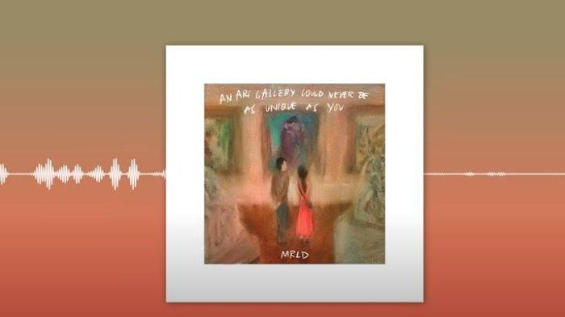

ict assignment song choice
Name: Julia Louisse Tantoy
Section: Harmony
"An Art Gallery Could Never Be As Unique As You"

Darling, don't move too much
'Cause you might break the things that you have touched
But let me tell you, don't go too far
And just enjoy this artistic room of ours
This empty canvas, that they misunderstood
I wanna paint you in it, but I'm not good
'Cause I wanna look at you when we are apart
'Cause you're not just a human being, you are art
So darling, darling don't be scared
'Cause even if I look everywhere
Your colors caught my eye
And you're my favorite sight to see
It's from the way that you move
And everything that you do
And after that it's when I realize
That I love you
You told me to look everywhere else
But I said no, 'cause when I look at you
My heart always melts
So I stayed even though you're a mess
'Cause you're like drugs and with yous
Yeah, I'm obsessed
So darling, darling don't be scared
'Cause even if I look everywhere
Your colors caught my eye
And you're my favorite sight to see
It's from the way that you move
And everything that you do
And after that it's when I realize
That I love you
Darling, darling, don't be scared
'Cause even if I look everywhere
Your colors caught my eye
And you're my favorite sight to see.